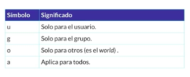
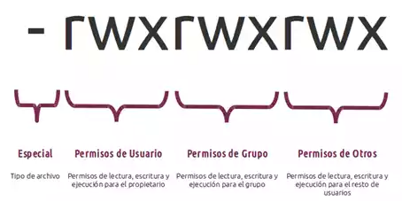
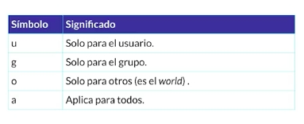
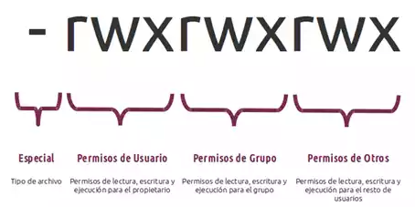

Permite modificar los permisos de lectura, escritura y ejecución, dependiendo del código o el símbolo del usuario
 



Permite saber en que usuario estoy ubicado
Muestra todos los usuarios y los grupos a los que pertenece
Permite cambiarse de usuario, en este caso al uauario root, que es el que mayor privilegios tiene
Con sudo se pueden borrar archivo por ejemplo, creados desde el usuario root